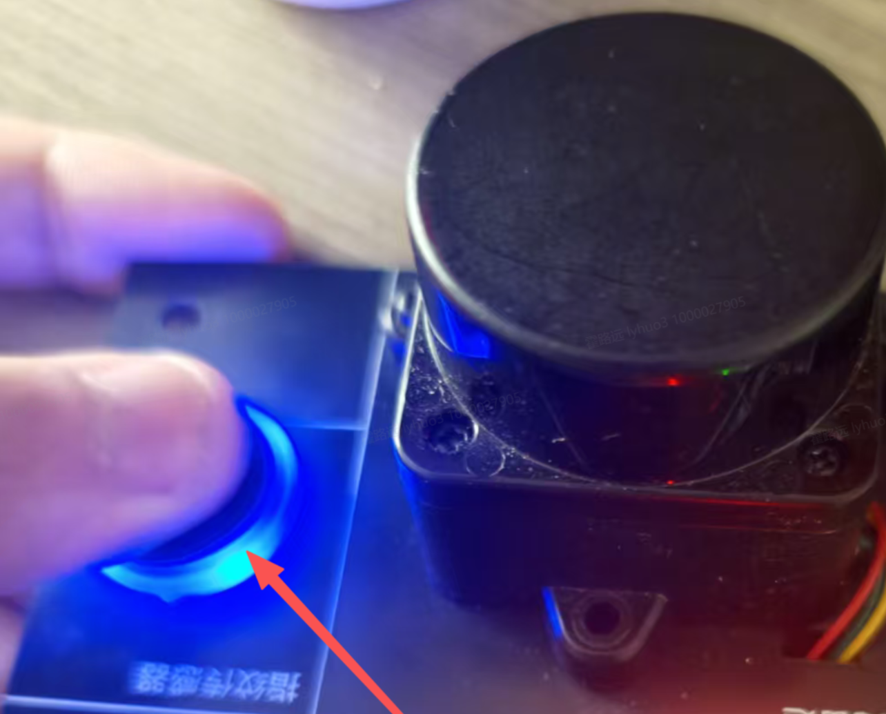
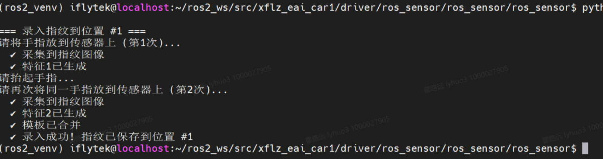
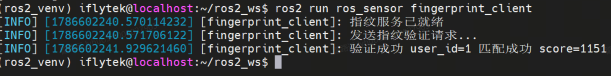

服务通信：指纹传感器的一问一答
话题像广播：说完就走，不管谁在听。但"验证这根手指是不是主人"必须拿到一个明确的答复才能决定开不开门——这种一对一、必须等到答案的调用，就是服务（Service）。本课用指纹验证讲透 request/response 的每一拍，并把"采图 → 生成特征 → 搜索比对"的底层三步看明白。
01为什么需要服务：有些事必须"等到答案"
想象你在公司前台值班，来了一个访客要进实验室。你不能广播一句"有人要进门"就转身干别的——你必须拿到一个明确的答复："他是张工，放行"或"查无此人，拦下"。这个答复只回答你这一次的提问，回答完这次对话就结束了。
上一课（EXP-06）的 MQ5 浓度是典型的话题场景：传感器每秒广播一次，有没有人听无所谓。但指纹验证完全不同，它是一次性提问，必须拿到"成功/失败"才能决定开门与否。
📵 硬用话题做"验证手指"？四堵墙
- 得自己开两条话题："请求话题"+"响应话题"，还要自己配对——响应堆里哪条是回答我这条的？
- 广播是发给所有人的：系统里另一个程序也收到"验证请求"，它也去操作指纹模组 → 串口打架
- "没人应答"没有任何机制兜底：发完就完了，等多久算失败？
- 成功/失败/超时/设备错误全靠自定义字段约定，每个节点各猜各的
✅ 用服务：这些 ROS2 都替你想好了
- 一次调用一次应答，天然可配对，响应一定回到发起者手里
- 服务名全局唯一注册（
/verify_fingerprint），不会有两个客户端抢同一个模组的局面由你设计 wait_for_service明确告诉你"服务在不在线"- 应答字段（success / user_id / message）写进
.srv接口，语义统一
02核心原理：一次 RPC 在 ROS2 里怎么跑起来
一个容易误会的地方先说破：ROS2 的服务不是"客户端直接调用服务端的函数"。把两个节点拆开看，中间隔着 DDS 和序列化——服务在底层其实是"两个方向的通道 + 一个配对约定"：请求沿一条通道去，应答沿另一条通道回，ROS2 靠请求里自带的客户端标识 + 序号把应答精确配回给发起者。下面这张图就是它内部的全貌（图 7-2）。
四拍流程：把图 7-2 走一遍
create_service(类型, '名字', 回调)——向计算图宣告"我提供此服务"，然后等被调。create_client + wait_for_service 循环——确认服务在线才敢发请求。call_async(Request) 立即返回 Future——发送本身不阻塞（名字里的 async 名副其实）。spin_until_future_complete 驱动执行器直到回包，future.result() 取应答。| 话题 vs 服务 | 话题（EXP-06） | 服务（本课） |
|---|---|---|
| 调用语义 | 持续数据流，一对多 | 单次请求/响应，一对一 |
| 时间性 | 异步，发完即走 | 同步，答到才回 |
| 可取消 | 否 | 否（阻塞中只能等或超时） |
| 中间反馈 | 无（值到了就是反馈） | 无（这正是动作要补的短板，EXP-08） |
| 典型场景 | MQ5 浓度持续发布 | 指纹验证、继电器控制、单次状态查询 |
03动画：一问一答的四个瞬间
下面这张时序图把一次完整调用压缩成 4.8 秒循环：①请求出发 → 服务端回调干活 → ②应答返回。盯着粉色小球（请求）和紫色小球（应答）各走一遍，就掌握了服务的全部时序。
对照图 7-2 看：① = 步骤②③（发送+等待的起点），服务端暗格 = 步骤⑥⑦，② = 应答通道回程。
04专题：指纹模组的三步与"确认码"
ROS 层之下，指纹模组走 UART 主从协议（包头 0xEF01 + 指令 + 校验）。它是个"一问一答"的老实人：主机发一条指令，模组回一个确认码。验证一次要走三步：
确认码：状态 ≠ 错误（高频考点）
| 确认码 | 含义 | 处理策略 |
|---|---|---|
0x00 | 成功 | 进入下一步 |
0x01 | 收包有错 | 真错误：校验失败/帧格式问题，返回失败 |
0x02 | 无手指 | 不是错误，是状态——继续轮询等待 |
轮询参数的账：retries=50 次 × sleep(0.2) 秒 ≈ 10 秒等待窗口——给用户留出"看到提示 → 放手指"的反应时间。想看这个策略实际怎么跑，直接去 05 的实验台试。
05服务实验台：亲眼看"同步阻塞"是怎么发生的
原理读十遍，不如亲手"卡"一次。下面的实验台完整复刻 fingerprint_server 的轮询逻辑（0.2s 一轮、retries=50）：选一种手指状态，点"发起验证"，看请求出去之后客户端在等什么、服务端在干什么。
手指状态
服务端写法（做个对照）
时间轴每一格 ≈ 一次 0.2s 轮询（为演示只画出前几轮，实际 retries=50）。黄色 = 等待（0x02），粉色 = 干活，绿色 = 拿到结果，红色 = 失败。
06先看现象：一步步跑通指纹验证
先不读代码——按下面的命令卡一条条敲，把"录入 → 服务端 → 客户端 → CLI 直调"四个现象亲手跑出来。看到现象再回头看 07 的代码，每一行你都知道自己在学什么。
录入是独立串口脚本，不走 ROS——所以直接进源码目录跑。
cd ~/ros2_ws/src/xflz_eai_car1/driver/ros_sensor/ros_sensor/ros_sensor
按终端提示，把同一根手指放上传感器两次（两次特征合并成一个模板写入 Flash）。
python3 fingerprint_enroll.py enroll -i 1
✔ 两次按压必须是同一根手指、角度尽量一致，否则报"合并模板失败"——重新录一遍即可。
python3 fingerprint_enroll.py list
📸 录入环节实物与终端截图


新开终端，先回到工作空间根目录并加载环境（ros2 run 找包靠它）。
cd ~/ros2_ws source install/setup.bash ros2 run ros_sensor fingerprint_server
✔ port/baud 来自参数（可用 --ros-args -p port:=… 或环境变量 FP_PORT 覆盖）——07 节代码里看它们是怎么声明的。
客户端先等服务上线，再发请求——按提示把手录入过的那根手指放上传感器。
cd ~/ros2_ws source install/setup.bash ros2 run ros_sensor fingerprint_client
✔ 换一根没录入过的手指再跑一次：终端打印 验证失败 user_id=-1 未匹配到指纹——两次现象都留证据（08 节任务要用）。
📸 客户端验证成功截图

这条命令相当于查服务黄页——/verify_fingerprint 在不在、谁来提供，一目了然。
ros2 service list | grep verify
ros2 service type /verify_fingerprint
✔ 想看这个接口里有哪些字段，用 EXP-09 的 ros2 interface show ros_sensor_interfaces/srv/VerifyFingerprint。
调用前先把手指放好——这个 srv 的请求字段为空，所以参数必须传 "{}"；不放手指的话，你会看到服务端轮询 50 次（约 10s）后回超时。
ros2 service call /verify_fingerprint ros_sensor_interfaces/srv/VerifyFingerprint "{}"
✔ 三连的价值：排障时先 CLI、再代码——CLI 能调通说明服务端没问题，问题在客户端；反之先查服务端。
07代码精讲：三份源码，逐行读懂你刚才跑的东西
按数据流的方向读三份源码：① 协议层（怎么跟模组说话）→ ② 服务端（怎么接请求、回应答）→ ③ 客户端（怎么发请求、等结果）。源码都在 ~/ros2_ws/src/xflz_eai_car1/driver/ros_sensor/ros_sensor/ros_sensor/。
第 1 站 · fingerprint_enroll.py：UART 协议层（不碰 ROS）
模组是"一问一答"的主从协议：主机发指令帧，模组回确认码。这个文件把字节级的收发全部封装成 Fingerprint 类，ROS 节点只管调用它的方法。
# 来源：fingerprint_enroll.py L19-33（指令码与确认码定义） # ── 指令码：每个都是"一条命令的编号"── CMD_GET_IMAGE = 0x01 # PS_GetImage 采集图像 CMD_GEN_CHAR = 0x02 # PS_GenChar 生成特征 CMD_SEARCH = 0x04 # PS_Search 搜索指纹库 CMD_REG_MODEL = 0x05 # PS_RegModel 合并特征生成模板（录入用） CMD_STORE_CHAR = 0x06 # PS_StoreChar 储存模板（录入用） # ── 确认码：模组对每条命令的"答复"── # 0x00 成功 0x01 收包有错 0x02 无手指（状态，不是错误！）
# 帧结构（_build_packet，L36-42）：一帧命令长这样—— ┌────────┬──────────┬────────┬────────┬────────┬────────┬──────────┐ │ 包头 │ 地址 │ 包标识 │ 长度 │ 指令码 │ 参数 │ 校验和 │ │ EF01 │ FF FF FF │ 01 │ 2 字节 │ 1 字节 │ n 字节 │ 2 字节 │ │ 固定头 │ 默认地址 │ 命令包 │ 后段长度 │ 干什么 │ 附加数据 │ 防传输出错 │ └────────┴──────────┴────────┴────────┴────────┴────────┴──────────┘ # 校验和 = 对"包标识+长度+指令码+参数"逐字节求和取低 16 位。 # _send()（L56-73）负责发帧、等应答帧、校验确认码——带超时保护。
# Fingerprint 类对外方法（接口示意，实现在 L45-124） fp = Fingerprint(port, baud) # 打开串口 code = fp.get_image() # → 0x00 采到图 / 0x02 无手指 / 0x01 帧错误 code = fp.gen_char(buf_id) # 图像 → 特征 result = fp.search() # 搜索库：result.page=命中页码（未命中 -1） # 录入脚本专用：fp.reg_model() 合并两次特征 / fp.store_char() 写入 Flash
| 逐行看点 | 它在干什么 |
|---|---|
| 帧尾的校验和 | 串口线上防传输出错的唯一手段——校验不过模组直接回 0x01"收包有错" |
_send 的收发超时 | 发帧后等应答帧带超时保护——串口不像网络有重传，没应答基本就是模组掉线 |
get_image → gen_char → search | 正好是 04 节图 7-3 的三步——协议层把每步各封一个方法，服务端按顺序调用 |
录入四步 get_image×2 + reg_model + store_char | 录入脚本专用：两次特征 + 合并 + 写 Flash——这就是录入和验证分成两个程序的原因 |
第 2 站 · fingerprint_server.py：服务端三步走
# 来源：fingerprint_server.py L19-26（节点初始化：参数声明 + 服务注册） super().__init__('fingerprint_server') self.declare_parameter('port', os.environ.get('FP_PORT', '/dev/ttyS10')) self.declare_parameter('baud', int(os.environ.get('FP_BAUD', '57600'))) self.declare_parameter('retries', 50) # 轮询次数：50×0.2s≈10s 窗口 self.srv = self.create_service( VerifyFingerprint, 'verify_fingerprint', self.handle_request) # ↑类型 ↑服务名（=客户端找它的地址） ↑回调
# 来源：fingerprint_server.py L46-87（handle_request：验证三步 + 串口保护） def handle_request(self, request, response): fp = Fingerprint(port, baud) # 打开串口 try: for _ in range(retries): # ① 轮询等手指 code = fp.get_image() if code == 0x00: break # 采到图 → 出循环 if code == 0x02: # 无手指 = 状态，继续等 time.sleep(0.2); continue response.success = False # 其它码 = 真错误 response.message = f'采集图像失败(code={code})' return response fp.gen_char(1) # ② 生成特征 result = fp.search() # ③ 搜索比对 if result.page >= 0: response.success = True response.user_id = result.page # 命中页码就是用户编号 response.message = f'匹配成功 score={result.score}' else: response.success = False; response.user_id = -1 response.message = '未匹配到指纹' finally: fp.close() # 串口必须无条件归还，否则下次打开失败（泄漏） return response # 返回的 response 即回传给客户端
| 逐行看点 | 为什么这么写 |
|---|---|
三个 declare_parameter | port/baud/retries 先声明后取用——忘声明就 get_parameter 会直接抛异常 |
0x02 → sleep(0.2) → continue | 05 实验台里"正常写法"那条路径的源码出处：状态与错误分流，10s 等待窗口由此而来 |
try/finally: fp.close() | 不管成功失败、哪怕中途抛异常，串口都会被关闭——否则服务端第二次调用就打不开串口 |
给 response 的每个字段赋值后 return | 服务端回调的"返回值即应答"：你填什么，客户端就收到什么 |
第 3 站 · fingerprint_client.py：异步发送、同步等待
# 来源：fingerprint_client.py L16-40（创建客户端 → 发请求 → 等结果） super().__init__('fingerprint_client') self.cli = self.create_client(VerifyFingerprint, 'verify_fingerprint') # ↑同名服务：客户端靠这个名字找到服务端 while not self.cli.wait_for_service(timeout_sec=1.0): # ① 等上线 self.get_logger().info('等待指纹服务 /verify_fingerprint ...') req = VerifyFingerprint.Request() # ② 本 srv 请求为空 future = self.cli.call_async(req) # ③ 异步发：立即返回 Future rclpy.spin_until_future_complete(self, future) # ④ 同步等：执行器转到 future 完成 resp = future.result() if resp is None: ... # 防御：调用失败时为 None if resp.success: self.get_logger().info(f'验证成功 user_id={resp.user_id} {resp.message}') else: self.get_logger().error(f'验证失败 user_id={resp.user_id} {resp.message}')
| 逐行看点 | 为什么这么写 |
|---|---|
wait_for_service 循环 | 客户端先启动时不会崩，而是一秒一次地等——服务端起来后它自动继续 |
call_async 名字里的 async | 只保证"发送不卡"；真正等到结果靠下一行 spin——两者配合才是"同步语义" |
spin_until_future_complete | 驱动执行器处理回包；future 完成后这行才返回——阻塞就阻塞在这 |
resp is None 判断 | 服务调用本身失败（如被拒绝/通信异常）时 result() 是 None，不判就直接崩 |
| 环节 | 服务端（第 2 站） | 客户端（第 3 站） |
|---|---|---|
| 建立端点 | create_service(类型, 名, 回调) | create_client(类型, 名) |
| 确认对方在线 | 不需要（被动等请求） | wait_for_service 循环 |
| 交换数据 | 回调参数 request 收，return response 回 | call_async(req) 发，future.result() 收 |
| 名字必须一致的地方 | 'verify_fingerprint' 与 VerifyFingerprint 类型——差一个字母就永远"等待中" | |
08动手任务：把现象变成你自己的证据
边做边填证据表——这就是你实验报告的素材。做之前先回 06 节照着命令卡跑通一遍。
enroll -i 1）；再故意用两根不同手指录一次，记录报错文案。要记录："合并模板失败"的完整终端输出。user_id=1 score=… 与 user_id=-1 未匹配到指纹 两条日志。ros2 service call … "{}" 调用但不放手指，用秒表计时。要记录：从回车到超时响应的实际秒数（理论 ≈ 50×0.2s=10s），和理论值对比。wait_for_service 起了什么作用。fingerprint_enroll.py enroll -i 2。要记录：串口打开失败的报错——这就是"录入与服务端互斥"的原因。| # | 要记录的证据 | 对应验收点（09 节） |
|---|---|---|
| 1 | 成功录入 + 失败录入两段终端输出 | 能说出录入/验证分离的原因 |
| 2 | 成功/失败验证客户端日志截图 | response 三字段（success/user_id/message）都会用 |
| 3 | 超时实测秒数 vs 理论 10s | 能算轮询窗口：retries × sleep |
| 4 | 客户端自动恢复的日志 | 能解释 wait_for_service 的作用 |
| 5 | 串口占用报错截图 | 能解释 try/finally 关串口的意义 |
09注意事项与验收清单
- 能按顺序背出服务客户端六步：create_client → wait_for_service → Request → call_async → spin_until_future_complete → result
- 解释清楚"call_async 是异步、整体语义却同步"的分工
- 录入 + 服务端/客户端验证 + CLI 三连全部成功
- 能说出 0x00/0x01/0x02 三个确认码及各自处理
- 能完成话题/服务/动作三机制的选型对比表
- 知道串口 try/finally 归还与"先停服务端再录入"的原因
| 坑 | 症状 | 解法 |
|---|---|---|
| 服务名不一致 | 客户端一直"等待指纹服务" | 先启动服务端，ros2 service list 确认 /verify_fingerprint 存在 |
| 串口被抢占 | 打开串口失败 / 录入报错 | 录入与服务端互斥；或用户不在 dialout 组 |
| call 参数写错 | call 报参数解析错误 | 本 srv 请求为空，必须传 "{}" |
| 手指没录入 | 验证恒 user_id=-1 | 先 enroll；验证时保持相同角度力度 |
| 忘了 declare_parameter | get_parameter 报异常 | port/baud/retries 三个参数先声明后取用 |
| 两次按压手指不同 | 录入报"合并模板失败" | 重新录入，两次同一根手指、角度一致、清洁干燥 |
10本课总结与思考题
应答配对内建，专治"必须等到答案"的场景。
call_async 保执行器畅通，spin_until_future_complete 负责等到。
服务端不拼帧，只调 Fingerprint 类；确认码区分状态与错误。
list/type/call 无需客户端即可验证服务端。
② 当前 srv 请求为空，无法指定"验证哪个用户/验证通过后开门还是记考勤"——如何扩展 .srv？给出字段设计与调用流程。
③ （进阶）轮询 50 次约 10 秒后超时返回——如果想让客户端"等不及可放弃"，服务能做到吗？不能的话该怎么办？（衔接 EXP-08 动作的取消能力）